この動画で伝える一文
「頑張ります」と言うPMは頼もしいと思っている人に、背負うべきなのは頑張りではなく見通しであり、会社が潰れる賭けは経営者の仕事で、リスクを取らずに着地させる人がいちばん優秀であり、リスクは起きても小さく抑え、立場で大きさは違い、背伸びの約束はマネジメントではなく、成功してもメンバーの頑張りか運が良かっただけでコントロールしておらず、死に物狂いは求められず淡々と着地させ、余白が効くのに私も含めて読み違い、過去を知っても次は楽観的に見積もる計画錯誤があり、1994年に卒業論文を書く学生37人の予想は平均33.9日、実際は平均55.5日で、予想した日までに終えたのは3割ほどであり、バッファのない計画はほぼ負けが決まっていて、一つ遅れれば崩れ、現場が埋め、自分から引き受け、最初に余白を交渉すべきで、休日も無理なペースも現場が払い、毎回やるといつか外れ、営業は敵ではなく仕事を取ってきて、夢が出発点ならできることとできないことを見せて着地させ、夢が大きいほど重く、夢を語ること自体は悪くないが売上やコストを見ないと現実に追いつかれ、思っていた通りなら優秀でも、リスクを三つも四つ抱えて運が良かったなら次も同じとは限らず、野球の3割とは違い9回か10回の単打が求められ、3回の大成功と7回の失敗では困り、ホームランはあとで順番が逆であり、楽に見えて実際は逆で、全部受けると丸く収まるが見通しが立たず、休日に頼み言いにくいので嫌われ、報酬が高いのは難しく、型に正解はなく前に進めばよく、信頼される人の言葉で合わない相手ともやり切り、誰のリスクを誰に背負わせるのかを考えたうえで、PMが背負うべきなのは頑張りではなく見通しの方だ、という本人の結論を残す。
01の「見通し。」と、08の「見通し。」で、同じ主張の背骨が通るようにします。02が背伸びはマネジメントではないことを、03が計画錯誤の二つの平均を、04がバッファと現場が払うことを、05が夢から着地まで連れていくことを、06が単打と順番を、07が嫌われ役を足します。
留保は01の「起きても小さく抑え」、02の「死に物狂いは、求めない。」、03の「3割ほど。」、04の「ほぼ、」と「いつか」、05の「夢を語ることは、悪くない。」と「次も同じとは、限らない。」、07の「型に、正解はない。」に置きます。最後は本人の結論で閉じ、視聴者への問いかけだけで終わらせず、両論を同じ比重にしたまとめにはしません。08の問いは原稿にある問いで、その直後の文が結論です。
視聴者
「頑張ります」と言うPMを、頼もしいと思う人。見終わったあと、背負うべきなのは頑張りではなく見通しだと分かり、余白のない約束を先に疑う見方にします。
構成と尺
声は理由、留保、本人の結論の範囲を、文字は主張と決め語を、棒とブロックは数字と連鎖を受け持ちます。全文字幕は足しません。写真も動画も使いません。図形と文字です。
本編144.5秒、全体150.0秒です。声は690字。5.5字/秒を仮の読み速度とすると125.5秒です。残りは8カット×約2秒（声の前0.5秒、後ろ約1.5秒）と、08で結びを受け取る約3秒です。5.5字/秒は過去の日本語ナレーションの実測（約5.5〜5.7字/秒）に合わせた目安で、語の読みと間で実測は変わります。制作側が声と画を合わせて調整します。読む速さを上げて詰めません。表の秒は0.1秒単位で、合計が144.5秒になるように置いています。未丸めの合計は144.45秒で、ロゴ5.5秒を足すと149.95秒です。2分30秒は超えません。創業期の話、競合の例、感染症とネットワーク、投資家の対比、型の肖像はこの尺では入れていません。入れなかった論点は references.md にあります。
| カット | 区間 | この区間で分かってほしいこと | 声／画面 |
|---|---|---|---|
| 01 見通し。 | 0:00.0–0:18.9（18.9秒） | 頼もしく見えても、背負うのは見通し。賭けは経営者、着地はPM | 93字／44字 |
| 02 背伸びは、マネジメントではない。 | 0:18.9–0:33.1（14.2秒） | 背伸びの約束はマネジメントではない。成功しても頑張りか運。死に物狂いは求めない | 67字／48字 |
| 03 計画錯誤 | 0:33.1–0:55.1（22.0秒） | 私も含めて読み違える。予想の平均33.9日、実際の平均55.5日。3割ほど | 110字／46字 |
| 04 現場が、払う。 | 0:55.1–1:14.2（19.1秒） | 隙間がなければ一つで崩れ、バッファは受け止める。払うのは現場 | 94字／39字 |
| 05 着地。 | 1:14.2–1:38.0（23.8秒） | 営業は敵ではない。夢から、できることとできないことを見せて着地へ。次は限らない | 120字／59字 |
| 06 単打で、いい。 | 1:38.0–1:49.5（11.5秒） | 3割では困る。9回か10回の単打。3回と7回では困る。ホームランはあと | 52字／42字 |
| 07 嫌われ役。 | 1:49.5–2:09.9（20.4秒） | 楽に見えて実際は逆。全部は受けない。型に正解はなく、合わない相手ともやり切る | 101字／57字 |
| 08 見通し。 | 2:09.9–2:24.5（14.6秒） | 誰のリスクを誰が背負うのか。結論は、頑張りではなく見通しの方 | 53字／29字 |
| 09 エンドロゴ | 2:24.5–2:30.0（5.5秒） | 制作表示 | 0字／0字 |
字数は空白と改行を除き、句読点を含みます。画面は各カットの「画面の文字」に掲げた文言の合計です。同じカットの中で、棒のラベルと大書きが同じ語のときは一度だけ数えます。別のカットに同じ語が出るときは、カットごとに数えます。08の14.6秒には結びを受け取る約3秒を含みます。声の合計690字、画面の合計364字です。
カット表・絵コンテ
各カットの開始と終了を画像で示します。コマ画は構図の設計資料です。番号、はじめ、おわりは画像の外だけに書きます。章表示、テロップ帯、エンドクレジットは入れません。03の棒の高さの比は33.9対55.5を守ります。ほかの秒数、位置、角度は参考値です。制作側は動きの狙いと可読性を満たす方法を選べます。大きな画面運動を入口と出口だけに限定しません。カメラの名前はカメラワークと切り替えの名前に合わせ、図の層に掛けます。
見通し。
0:00.0–0:18.9 / 18.9秒 ・ 主張 ・ 声93字／画面44字

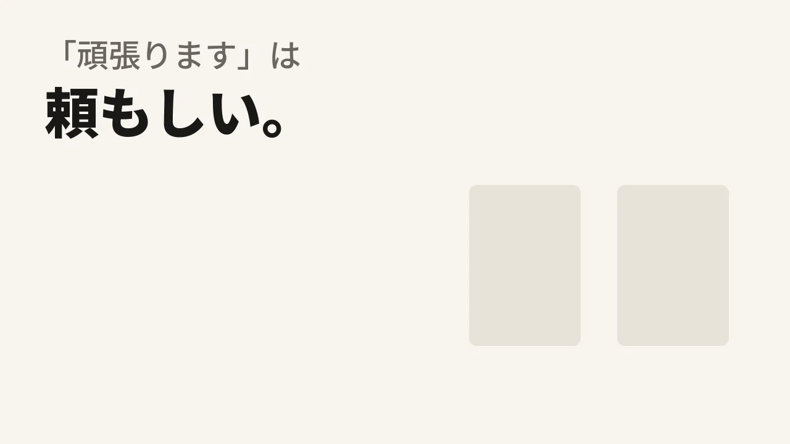

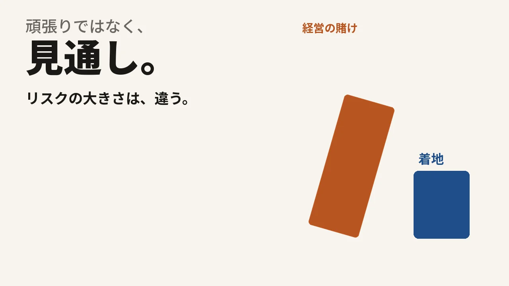
「頑張ります」は
頼もしい。
頑張りではなく、
見通し。
リスクの大きさは、違う。
経営の賭け
着地
「頑張ります」は頼もしく見えます。頑張りではなく見通しです。会社が潰れる賭けは経営者の仕事です。リスクを取らず着地させる人がいちばん優秀です。起きても小さく抑え、立場で大きさは違います。
はじめは左の大きな「頼もしい。」と、右に同じ高さの二本です。おわりは左に特大の「見通し。」、その下に「リスクの大きさは、違う。」、右は高い錆色の柱と、低い青の柱です。01は横に二本、08の結びは縦に積みます。柱に文字は載せません。
- 声は約0.5秒置いて入る。「頼もしい。」は行のマスクから左へ入り、声の「頼もしく見えます」に着地する。二本はまだ同じ高さ。
- 声の「頑張りではなく見通しです」で、「見通し。」が大きく着地する。声の「経営者の仕事」で左の柱だけが高くなり、少し傾く。声の「着地させる」で右の柱は低く、立ったまま残る。
- 声の「立場で大きさは違います」に、「リスクの大きさは、違う。」を着地させる。二本を同じ高さへ戻さない。
- 読むあいだ、机の層は高い柱に合わせてゆっくり流れ、高い柱は流れより少し速い。字形は崩さない。
- 傾いた柱の向きを、02の「頑張ります」が縦に伸びる入口にする。ここで止めない。
机の層を、傾いた柱に合わせて少し左へ振る（パン）。文字は正面のまま読む。
図形と文字。人の姿は描きません。二本は立場の違いで、顔にはしません。
背伸びは、マネジメントではない。
0:18.9–0:33.1 / 14.2秒 ・ 主張 ・ 声67字／画面48字

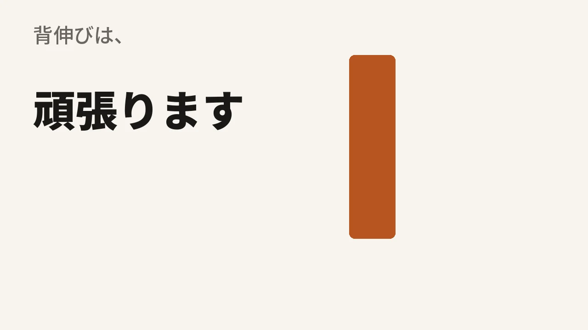

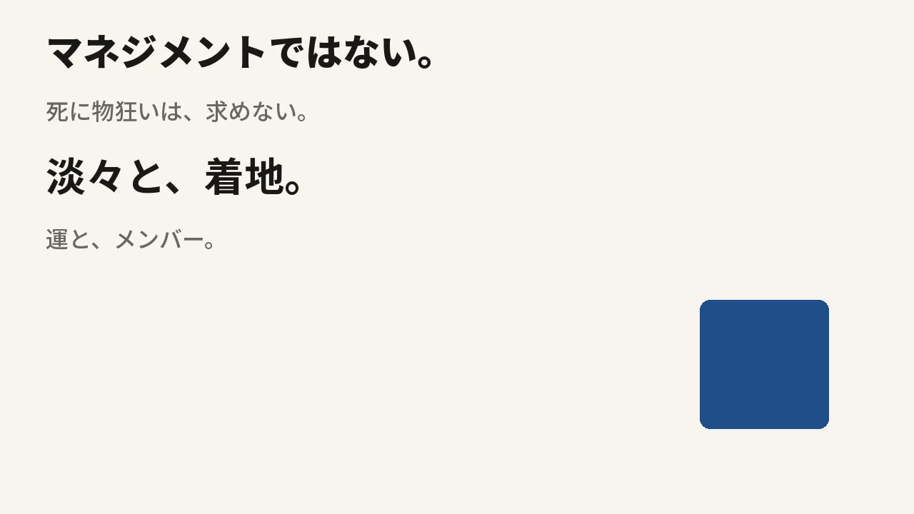
背伸びは、
頑張ります
マネジメントではない。
死に物狂いは、求めない。
淡々と、着地。
運と、メンバー。
背伸びはマネジメントではありません。成功しても、メンバーの頑張りか運が良かっただけです。コントロールしていません。淡々と着地させます。
はじめは左に灰の「背伸びは、」と、特大の「頑張ります」、右に高い柱です。おわりは左に四段です。「マネジメントではない。」がいちばん大きい。「死に物狂いは、求めない。」と「運と、メンバー。」は灰で、その仕事を否定する行と、成功の中身を残します。右の柱は短くなります。声は死に物狂いを言わず、画面が残します。
- 「頑張ります」が下から縦に伸び、声の「背伸びは」に着地する。右の柱も同じ向きに伸びる。
- 声の「マネジメントではありません」で、伸びた語は小さく上へ退き、「マネジメントではない。」が大きく着地する。柱は短い高さへ戻る。
- 声の「運が良かっただけです」で、灰の「運と、メンバー。」が着地する。声の「淡々と着地させます」で「淡々と、着地。」が着地する。「死に物狂いは、求めない。」は、退いた語のあとに灰で残す。
- 読むあいだ、短い柱は止めず、03の棒の下端へ横に流す。
伸びた柱から、着地した「マネジメントではない。」へ寄る。掛けるのは図の層です。文字は正面のまま。
図形と文字。人の背伸びは描きません。
計画錯誤
0:33.1–0:55.1 / 22.0秒 ・ 見せ場 ・ 声110字／画面46字

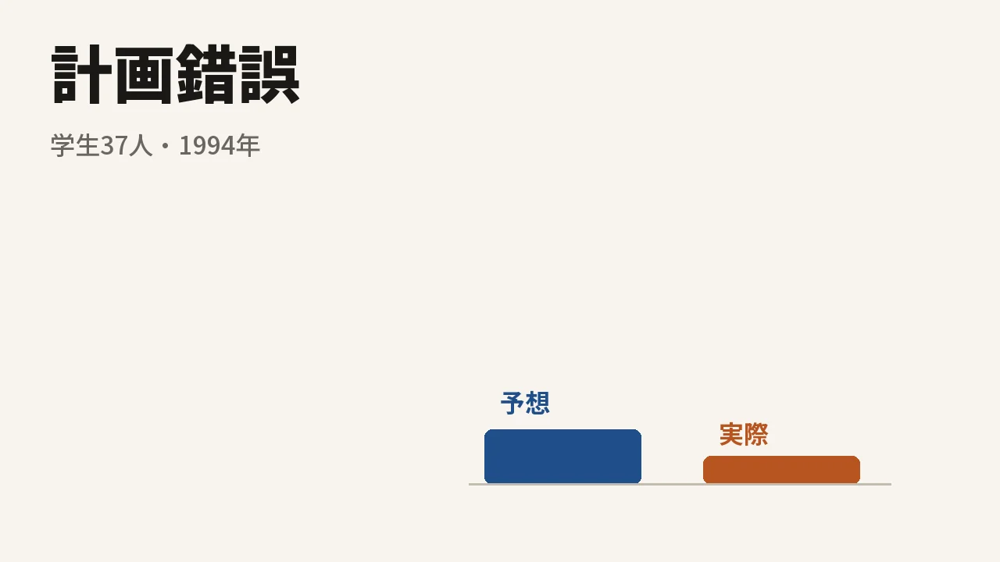

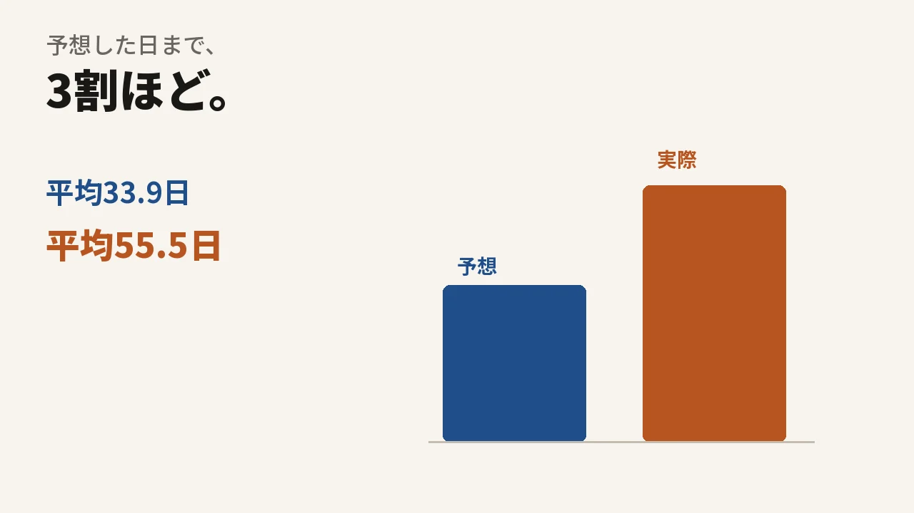
計画錯誤
学生37人・1994年
予想
実際
予想した日まで、
3割ほど。
平均33.9日
平均55.5日
余白が効き、私も含めて読み違えます。計画錯誤で、過去を知っても次は楽観的に見積もります。1994年、卒業論文を書く学生37人の予想は平均33.9日、実際は平均55.5日でした。予想した日までに終えた学生は3割ほどでした。
はじめは左に特大の「計画錯誤」と、灰の「学生37人・1994年」、右にまだ短い二本です。おわりは左に「3割ほど。」が大きく、その下に青の「平均33.9日」と錆色の「平均55.5日」、右に二本です。実際の棒の高さは、予想の棒の55.5分の33.9ではなく、33.9分の55.5です。同じ下端から伸ばします。長い棒に王冠や順位は付けません。研究者の実名は書きません。棒の面に数字は重ねません。
- 声の「計画錯誤」に「計画錯誤」が着地する。二本は0から伸び始める。予想が先に平均33.9日で止まり、実際は平均55.5日まで伸び続ける。
- 数字は声の「33.9日」「55.5日」に合わせてその平均で止める。桁を回して賞の数字にはしない。
- 声の「3割ほどでした」に「3割ほど。」を着地させる。ほど、を消して3割ぴったりにはしない。
- 読むあいだ、図の層だけを二本の差へ寄せる（ドリーイン）。文字は正面のまま。寄る時間は参考で、約2秒。
- 高い棒の上端を、04の隙間のない列の入口の高さにする。ここで棒を勝ちのポーズにしない。
ドリーインは図の層だけ。数字と「3割ほど。」はぼかさない。
図形と文字。研究の図表の画像は使いません。指標の説明は references.md。
現場が、払う。
0:55.1–1:14.2 / 19.1秒 ・ 見せ場 ・ 声94字／画面39字

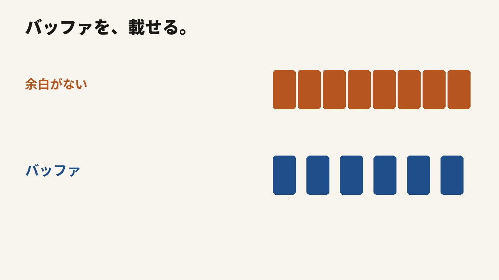

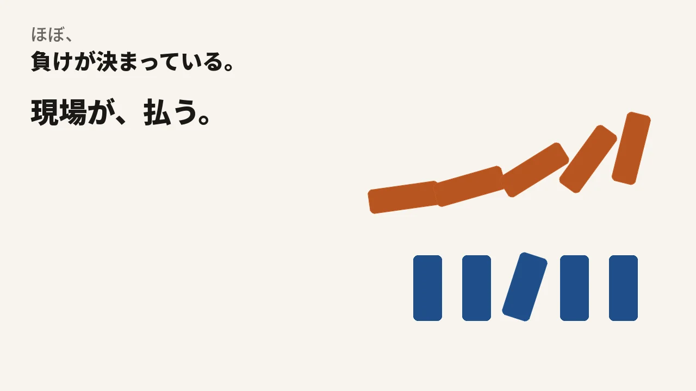
バッファを、載せる。
余白がない
バッファ
ほぼ、
負けが決まっている。
現場が、払う。
バッファしかありません。パツパツはほぼ負けです。一つ遅れれば崩れ、現場が埋めるしかありません。自分から引き受け、余白を交渉します。休日も無理なペースも現場が払い、毎回やるといつか外れます。
はじめは左に「バッファを、載せる。」、右上に錆色の密な列、右下に青の隙間のある列です。おわりは左に「負けが決まっている。」と特大の「現場が、払う。」、右上は倒れた列、右下は一つだけ傾いて、その先は立っています。声は「ほぼ負け」まで言い、画面は「決まっている。」まで残します。ブロックの面に文字は載せません。二列は同じ形のブロックで、隙間の有無だけが違います。
- 二列が右から入り、声の「バッファしかありません」に「バッファを、載せる。」が着地する。
- 声の「一つ遅れれば」で、上の列の一つが傾き、次へ届いたものから順に倒れる。下の列も一つが傾くが、隙間に収まって、その先は倒れない。
- 声の「現場が払い」に「現場が、払う。」を着地させる。倒れた列を、誰かが立て直して成功した絵にはしない。
- 読むあいだ、上の列は倒れきる方向へ、下の列は立ったまま、逆向きにゆっくり流す。字形は崩さない。
- 下の列の残ったブロックを、05の着地へ向かう列の先頭にする。
倒れていく列に沿って、図の層を送る（トラッキング）。文字は正面のまま。倒れる時間は参考で、声の「一つ遅れれば崩れ」のあいだに見せます。
図形と文字。木のブロックの映像は使いません。扱いは差し替え候補。倒れ方はフレーム時刻から決め、実時間の物理演算を本編の動きにしません。
着地。
1:14.2–1:38.0 / 23.8秒 ・ 主張と留保 ・ 声120字／画面59字

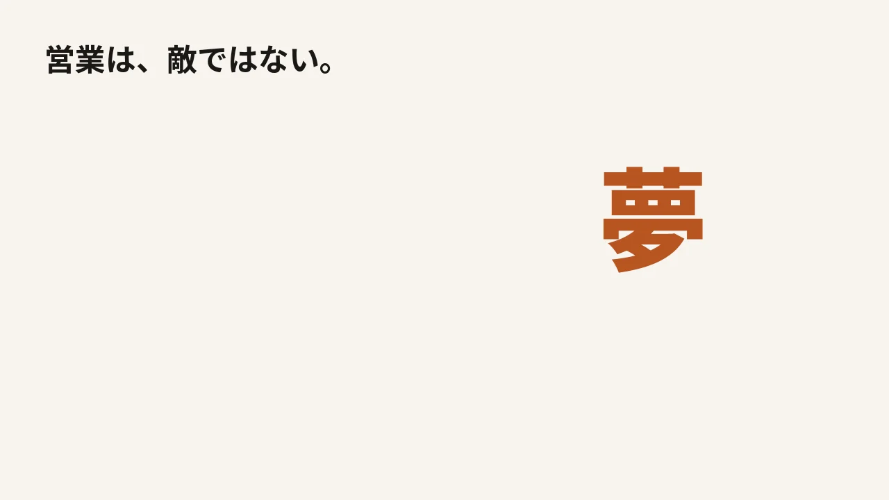

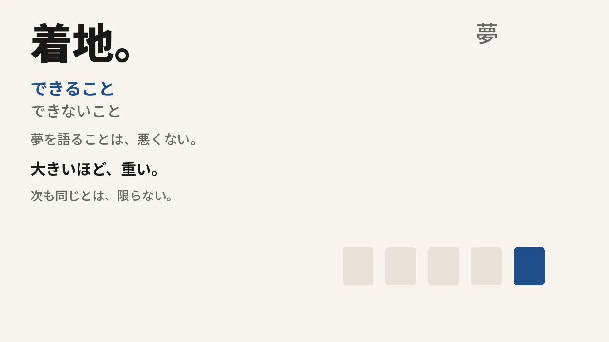
営業は、敵ではない。
夢
着地。
できること
できないこと
夢を語ることは、悪くない。
大きいほど、重い。
次も同じとは、限らない。
営業は敵ではなく仕事を取ってきます。夢が出発点で、できることとできないことを見せて着地させます。悪くはなく、売上やコストを見ないと追いつかれます。思っていた通りなら優秀です。リスクを三つも四つ抱えて運が良かったなら、次も同じとは限りません。
はじめは左の一行と、右に特大の「夢」です。おわりは左に五段、「着地。」がいちばん大きい。「できること」は青、「できないこと」と「夢を語ることは、悪くない。」と「次も同じとは、限らない。」は灰です。「大きいほど、重い。」は声では言わず、画面に置きます。右上の「夢」は小さく残し、消して夢がなかったことにはしません。下の列の最後の一つだけが青です。
- 声の「敵ではなく」に「営業は、敵ではない。」が着地する。「夢」は奥から手前へ大きく出る。
- 声の「着地させます」で「夢」は右上へ退いて小さくなり、「着地。」が手前に着地する。「できること」と「できないこと」は、声のその語に合わせて左右から入る。
- 声の「悪くはなく」で、灰の「夢を語ることは、悪くない。」を着地させ、主語を画面に残す。声の「限りません」で「次も同じとは、限らない。」が着地する。次は必ず失敗する、にはしない。
- 読むあいだ、下の列は「着地。」へ向かって流れ続ける。最後の一つが青になるのは、声の「思っていた通り」。
- 青の一つを、06の単打の列の先頭にする。
大きな「夢」から「着地。」へ、図の層を寄せる。文字は正面のまま。
図形と文字。営業の画面や、会社の印は出しません。
単打で、いい。
1:38.0–1:49.5 / 11.5秒 ・ 主張 ・ 声52字／画面42字

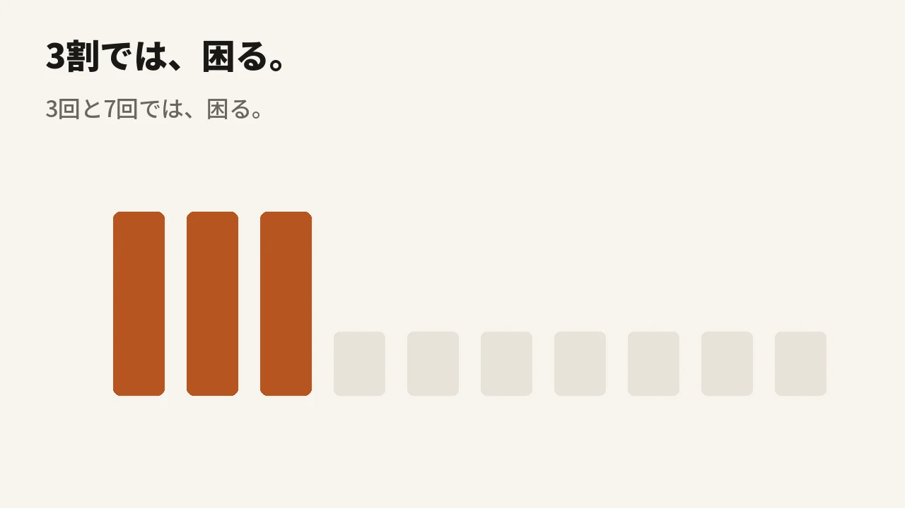

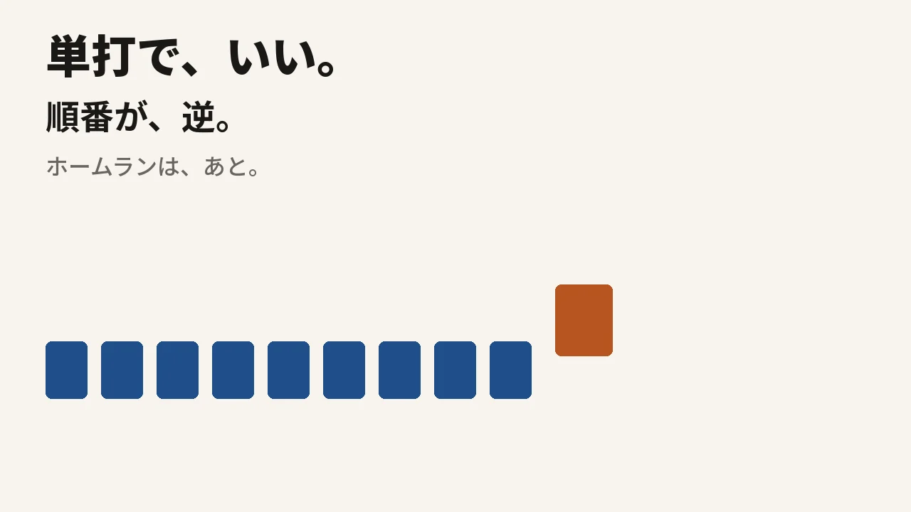
3割では、困る。
3回と7回では、困る。
単打で、いい。
順番が、逆。
ホームランは、あと。
野球は3割で一流です。9回か10回の単打が求められ、3回の大成功と7回の失敗では困ります。順番が逆です。
はじめは左に「3割では、困る。」が大きく、その下に灰の「3回と7回では、困る。」、下に同じ列の10本です。左の3本だけが高い。おわりは左に三段、「単打で、いい。」がいちばん大きい。下に同じ高さの9本と、その右で一段高い1本です。声はホームランを言わず、画面の「ホームランは、あと。」が順番を見せます。人の姿やバットは描きません。10打数という単位は声の「9回か10回」に残し、画面には書きません。
- 声の「3割で一流です」に「3割では、困る。」が着地する。高い3本が先に立つ。
- 声の「7回の失敗では困ります」で、残りの7本が低く揃う。声の「単打が求められ」で、列が同じ高さの単打へ組み替わる。
- 声の「順番が逆です」に「順番が、逆。」を着地させ、そのあとで右の1本だけが持ち上がる。「ホームランは、あと。」は持ち上がるより先に出して、あと、を見せる。
- 読むあいだ列は止めない。持ち上がった1本を、07の二つの面へ渡す前に、列の外へは出さない。
列に沿って図の層を右へ送る。文字は正面のまま。
図形と文字。試合の映像や、人の形は使いません。
嫌われ役。
1:49.5–2:09.9 / 20.4秒 ・ 主張と留保 ・ 声101字／画面57字

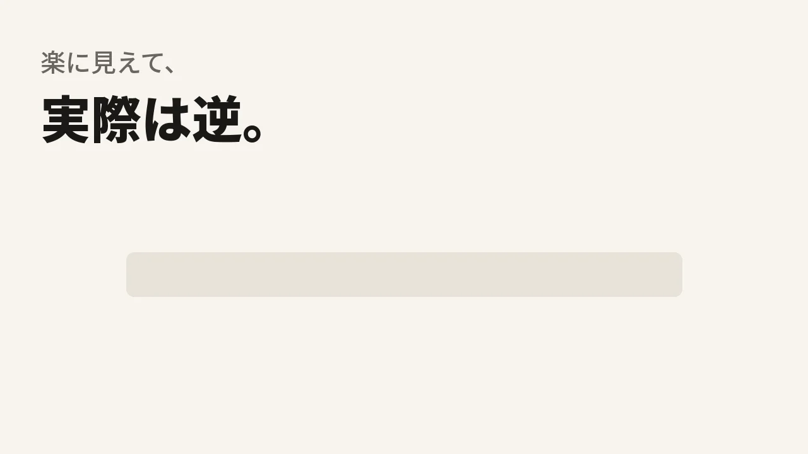

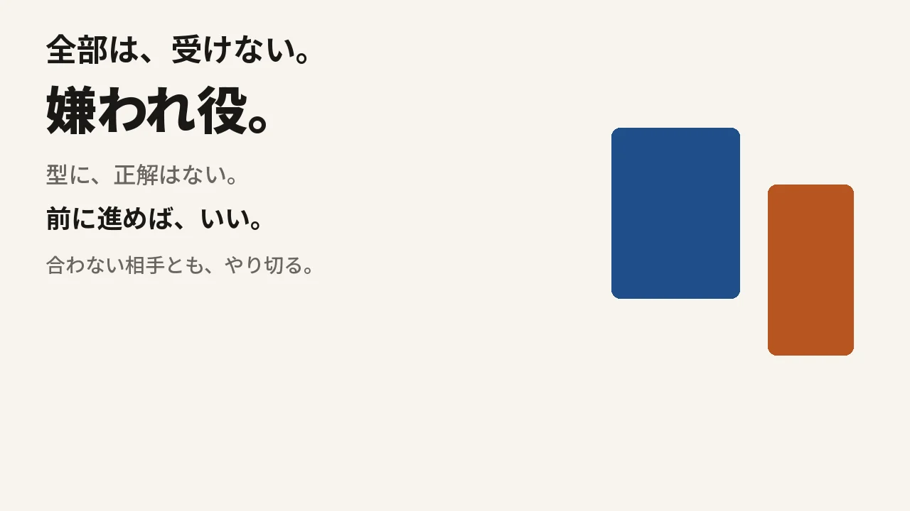
楽に見えて、
実際は逆。
全部は、受けない。
嫌われ役。
型に、正解はない。
前に進めば、いい。
合わない相手とも、やり切る。
楽に見えて、実際は逆です。全部受けると丸く収まり、見通しが立ちません。休日に頼み、言いにくく嫌われます。報酬が高いのは難しいからです。型に正解はなく、信頼される人の言葉で、合わない相手ともやり切ります。
はじめは左の二段と、下に一本の帯です。帯は、その場が丸く収まった見た目です。おわりは左に五段、「嫌われ役。」がいちばん大きい。「型に、正解はない。」と「合わない相手とも、やり切る。」は灰です。「前に進めば、いい。」は声では言わず、画面に置きます。右の二つの面は、お客さん側とメンバー側で、人の形にはしません。面に文字は載せません。
- 声の「実際は逆です」に「実際は逆。」が着地する。一本の帯が、左右の二つの面へ割れる。
- 声の「見通しが立ちません」で「全部は、受けない。」が着地する。声の「嫌われます」で「嫌われ役。」が大きく着地する。
- 声の「やり切ります」で「合わない相手とも、やり切る。」が着地する。二つの面は、読むあいだも高さを変え続け、どちらかが消えて楽になった絵にはしない。
- 二つの面のあいだの空きを、08の問いの行が通る道にする。
割れた二つの面を、図の層だけ左右へ開く。文字は正面のまま。
図形と文字。交渉の席や、人の顔は描きません。
見通し。
2:09.9–2:24.5 / 14.6秒 ・ 本人の結論 ・ 声53字／画面29字

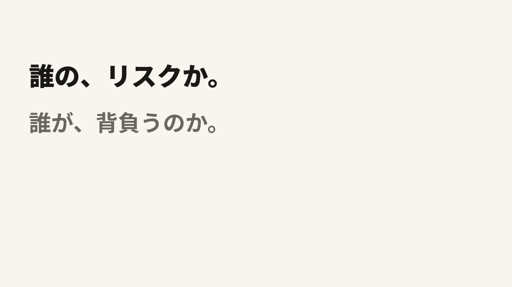

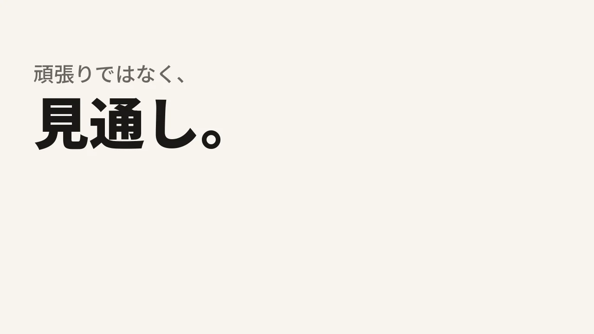
誰の、リスクか。
誰が、背負うのか。
頑張りではなく、
見通し。
誰のリスクを誰に背負わせるのか、考えてみてください。PMが背負うべきなのは、頑張りではなく見通しの方です。
はじめは左に二段です。おわりは左に縦の二段です。「見通し。」がいちばん大きい。「頑張りではなく、」はその上で小さく、結論の行より大きくしません。後半の文は原稿のその文のままです。01の横の二本とは組を変えます。視聴者への問いだけで閉じません。
- 声の「誰に背負わせるのか」で、二段が上から着地する。
- 声の「見通しの方です」に、いちばん大きい「見通し。」を着地させる。
- 結びの約3秒も縦の塊をゆっくり寄せる。字形は崩さない。
- 最後に図の層を右へホイップパンし、ライムの全面へ渡す。ロゴの動きは、この振りが終わってから始める。
結びのあいだは文字の塊へ寄せてから、図の層だけをホイップパンする。ロゴの区間は固定です。振るあいだの短いぼかしに、白い加算は入れません。
図形と文字。結論を視聴者への問いだけに置き換えません。
エンドロゴ
2:24.5–2:30.0 / 5.5秒 ・ 制作表示 ・ 声0字／画面0字

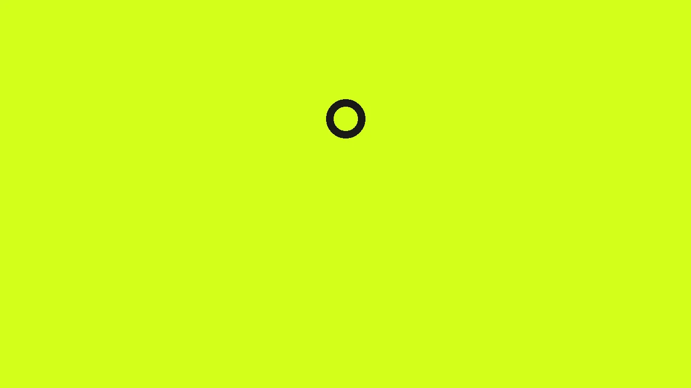

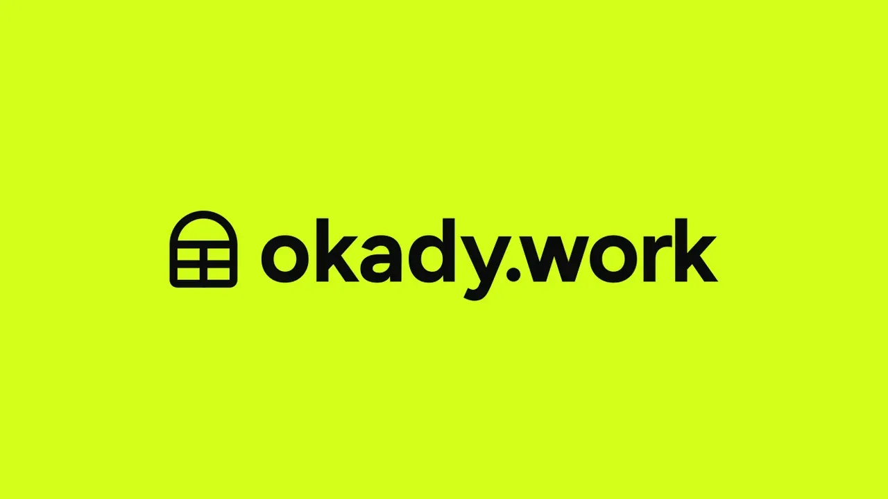
なし（ロゴのみ）
なし
背景は #d2ff1a。ロゴは中央。形、書体、色、比率は変えない。本編の要素は重ねません。
- 0–2.6秒：原本 SVG の o の落下、バウンド、定位置への移動。
- 2.6–3.2秒：全体が左へスライド。3.0–4.0秒：「.work」が一文字ずつ出現。
- 4.0–5.5秒：完成状態を1.5秒保持して終える。
ロゴの区間は固定。本編からの振りは、この動きが始まる前に終えます。
リポジトリ直下の okady-work-logo.svg。フレーム時刻から再現します。

詳細（ここから下は補足）
声・文字・素材の分担
| 担当 | 受け持つこと | 扱い |
|---|---|---|
| 声 | 頼もしく見えること、頑張りではなく見通しであること、経営者の賭け、いちばん優秀なのはリスクを取らず着地させる人であること、起きても小さく抑えること、立場で大きさが違うこと、背伸びはマネジメントではないこと、メンバーの頑張りか運であること、コントロールしていないこと、淡々と着地させること、余白、私も含めて読み違えること、計画錯誤、二つの平均と3割ほど、バッファ、ほぼ負け、一つで崩れること、自分から引き受けて余白を交渉すること、休日と無理なペースは現場が払うこと、いつか外れること、営業は敵ではなく仕事を取ってくること、夢から着地へ、売上やコスト、思っていた通りなら優秀なこと、三つも四つと運なら次は限らないこと、3割、9回か10回の単打、3回と7回、順番が逆であること、楽に見えて実際は逆であること、全部は受けないこと、休日に頼み嫌われること、報酬、型に正解はないこと、信頼される人の言葉でやり切ること、考えてみてください、と、原稿のままの結論 | 画面の短い語と意味を合わせる。画面の全文の朗読にはしない。カット単位のまとまった文で渡す。 |
| 文字 | 見通し、背伸びはマネジメントではない、死に物狂いは求めない、計画錯誤と二つの平均、負けが決まっている、現場が払う、着地、夢を語ることは悪くない、大きいほど重い、単打、ホームランはあと、嫌われ役、前に進めばいい | 説明の全文は載せない。01は横の二本、08は縦の二段で組を変える。 |
| 図形 | 二本の柱、伸びる棒、隙間のない列と隙間のある列、着地へ向かう列、10本の列、二つの面 | 一つの形に複数の意味を持たせない。対応は記号と色。 |
| 動画 | なし | 写真も、生成映像も、この企画の本線には使わない |
ナレーションありの構成です。音声の制作は制作側の担当で、音源がまだ無いことは引き渡しを止める理由にしません。読みは「計画錯誤＝けいかくさくご」「バッファ＝バッファ」「パツパツ＝パツパツ」「マネジメント＝マネジメント」「ホームラン＝ホームラン」「単打＝たんだ」です。PMは原稿の略称のまま読みます。
主張・根拠・留保の対応
| 役割 | 内容 | カット |
|---|---|---|
| 主張 | 頑張ります、は頼もしく見える。背負うべきなのは、頑張りではなく見通し。 | 01、08 |
| 主張 | 会社が潰れる賭けは経営者の仕事。リスクを取らずに着地させる人が、いちばん優秀。 | 01 |
| 留保 | 起きても小さく抑える。立場で、リスクの大きさは違う。 | 01 |
| 主張 | 背伸びの約束はマネジメントではない。成功してもメンバーの頑張りか運で、コントロールしていない。淡々と着地させる。 | 02 |
| 留保 | 死に物狂いは求めない。画面に置き、声は淡々と着地で受ける。 | 02 |
| 根拠 | 余白が効く。私も含めて読み違える。計画錯誤で、過去を知っても次は楽観的に見積もる。 | 03 |
| 根拠 | 1994年、卒業論文を書く学生37人。予想の平均33.9日、実際の平均55.5日。予想した日までに終えたのは3割ほど。 | 03 |
| 主張 | バッファしかない。パツパツはほぼ負けが決まっている。一つ遅れれば崩れ、現場が埋めるしかない。自分から引き受け、最初に余白を交渉する。 | 04 |
| 主張 | 休日も無理なペースも、現場が払う。毎回やるといつか外れる。 | 04 |
| 留保 | 営業は敵ではなく、仕事を取ってくる。夢を語ること自体は悪くない。売上やコストを見ないと追いつかれる。三つも四つ抱えて運が良かったなら、次も同じとは限らない。 | 05 |
| 主張 | 夢が出発点なら、できることとできないことを見せて着地させる。大きいほど重い。思っていた通りなら優秀。 | 05 |
| 主張 | 野球は3割で一流でも、PMは9回か10回の単打。3回の大成功と7回の失敗では困る。順番が逆で、ホームランはあと。 | 06 |
| 主張 | 楽に見えて実際は逆。全部受けると丸く収まるが見通しが立たない。休日に頼み、言いにくいので嫌われる。報酬が高いのは難しいから。 | 07 |
| 留保 | 型に正解はない。前に進めばいい。信頼される人の言葉で、合わない相手ともやり切る。 | 07 |
| 結論 | 誰のリスクを誰に背負わせるのか。PMが背負うべきなのは、頑張りではなく見通しの方だ。 | 08 |
原稿の文との対応、画面の文言と要約の区別、この動画に載せなかった論点は references.md。
企画側／制作側
| 企画側で用意するもの | 制作側で仕上げるもの |
|---|---|
| 現行の文言、声の原稿、配分、絵コンテ18枚、原稿との対応、演出の採否、曲の条件 | three.js と文字層の実装、細かな動きと同期、ナレーション、BGMと効果音、代表区間の試作と全編の書き出し |
| 静止コマの文字配置の点検 | 動いている全カットの安全域と重なりの検査、実速再生 |
企画と絵コンテはこの一式です。ナレーション、BGM、効果音、本編は制作側が担当します。企画側は音源を作りません。これ以外の画像や動画が必要になったら、必要な内容を企画側へ返します。制作側は動画AIで新規の素材を作りません。
requestAnimationFrame のループを本編の動きにしません。ナレーションの候補は Gemini 3.8 Flash TTS、または Eleven v4。名称はユーザー指定の候補で、実行時に識別子を確認します。キーは環境変数から読み、値は書きません。デザインシステム（映像の文字・色・グリッド）
紙色 #F7F4EE、墨 #1A1916、灰 #6B6560、青 #1F4E89、錆 #B85420。青は予想、バッファ、着地。錆は超過、隙間のない列、払う側。ライム #d2ff1a はロゴだけに使います。文字は Noto Sans JP、見出し700–900、補足400–500。制作側が OFL に沿って用意します。このフォルダには同梱しません。企画書の配色とは別です。
| 段 | 1920×1080の参考値 | 用途 |
|---|---|---|
| 大きな語 | 140–200px | 01と08の「見通し。」、02の「マネジメントではない。」、04の「現場が、払う。」、05の「着地。」、06の「単打で、いい。」、07の「嫌われ役。」 |
| 主文 | 80–120px | 03の「3割ほど。」、04の「負けが決まっている。」 |
| 短い語 | 40–64px | 灰の留保、棒と列のラベル、平均の数字 |
外側余白は96pxを目安にします。文字の安全域は左右64px、上下48px。1280×720の絵コンテでは左右48px、上下36pxです。01は左の語と右の二本、02は伸びる語から左の四段、03は左の数字と右の棒、04は左の語と右の二列、05は大きな夢から左の五段、06は10本の列、07は一本の帯から二つの面、08は横の問いから縦の二段です。
動きの言語
| 動作 | 意味と使う場所 | 読む間・次へのつながり |
|---|---|---|
| 同じ高さの二本が、高さと傾きで分かれる | 01。頼もしく見えても、立場でリスクの大きさが違う。 | 机を流し、傾きを02の縦の伸びに渡す。 |
| 語と柱が縦に伸び、短い高さへ戻る | 02。背伸びはマネジメントではない。死に物狂いは求めない。 | 短い柱を03の棒の下端にする。 |
| 二本が、原稿の平均まで伸びる | 03。予想は平均33.9日で止まり、実際は平均55.5日まで伸びる。長いことは勝ちではない。 | 高い上端を04の密な列の入口にする。 |
| 隙間のない列が倒れ、隙間のある列は一つで止まる | 04。一つ遅れれば崩れる。バッファは遅れを受け止める。払うのは現場。 | 残ったブロックを05の列の先頭にする。 |
| 大きな夢が退き、着地が手前に出る | 05。夢が出発点。できることとできないことを見せて着地へ。次は限らない。 | 青の一つを06の単打の先頭にする。 |
| 高い3本が、同じ高さの列になり、あとで一つ持ち上がる | 06。3回と7回では困る。単打でいい。ホームランはあと。 | 列は止めず、07の帯へ渡す。 |
| 一本の帯が、二つの面に割れる | 07。全部受けるとその場は丸い。実際は、両方に言いにくい。 | 二つの面のあいだを08の問いの道にする。 |
| 縦の結びが着地し、右へ振る | 08。誰のリスクか。結論は見通しの方。 | 結びの約3秒も塊を寄せ、ホイップパンでロゴへ渡す。 |
1字ずつの常時の揺れ、拍ごとの脈動、文字の崩壊は使いません。文字を読ませるために画面全体を静止させず、文量、動かす層、構図で調整します。イージングの値は制作側の裁量です。03の棒の比、ロゴの秒、決め語を声のどの語に合わせるかは、各カットに書いてあります。声の語と画面の変化を並べ、3秒以上変化のない区間を残しません。
記号と色
| 記号 | 意味 |
|---|---|
| 墨の大きな語 | 本人の決め語。01と08の「見通し。」、02の「マネジメントではない。」、04の「現場が、払う。」、05の「着地。」、06の「単打で、いい。」、07の「嫌われ役。」 |
| 灰の語 | 留保と程度。02の「死に物狂いは、求めない。」「運と、メンバー。」、03の「3割ほど。」、04の「ほぼ、」、05の「夢を語ることは、悪くない。」「次も同じとは、限らない。」、06の「ホームランは、あと。」、07の「型に、正解はない。」 |
| 青の柱、棒、列 | 着地、予想、バッファ、単打。リスクを小さく抑える側 |
| 錆の柱、棒、列 | 経営の賭け、実際の日数、隙間のない列、あとから持ち上がる一つ。長いことは勝ちではない |
| 二つの面 | お客さん側とメンバー側。人の形ではない。07 |
キャラ設定
人物、顔、手は描きません。柱の本数は人の姿ではありません。吹き出しは出しません。会社名、人名、研究者の実名、SNSの画面は出しません。
差し替え候補
机の上に隙間なく並べた木のミニチュアブロックが、一つずれて列ごと倒れる映像は、AI生成・未承認・未生成です。今回は生成しません。尺の案は4秒、寄りはゆっくりしたドリーイン、画はマクロ、です。人物は描きません。本線は、制作側が描くブロック列です。隙間のない列が倒れ、隙間のある列が遅れを受け止めます。
ブロックは01の柱、02の伸びる柱、04の二列、05の着地の列、06の10本に続きます。その一部だけを木の映像や実写にはしません。木の映像を後から使う場合は、ブロックが出る区間の質感を揃え、クレジット消費の承認が要ります。この企画ではその承認をしていません。
素材
| ファイル | 役割 | 使用区間 |
|---|---|---|
assets/storyboard/cut-XX-start.webp と cut-XX-end.webp | 絵コンテ18枚。1280×720。09はライム。ほかは明るい紙色の図形と文字 | 本編に貼る完成素材ではない |
| okady-work-logo.svg | エンドロゴ | 09の全区間。リポジトリ直下の原本。一式を移すときもこの相対位置を保つ |
新たに取得する写真、動画、フォントファイルはありません。Noto Sans JP は制作側が用意します。このフォルダには同梱しません。
音
BGMと効果音は制作側が作ります。企画側は音源を作らず、条件だけを書きます。音源がまだ無いことは、引き渡しを止める理由にしません。
- トーン：机の上で予定が伸び、列が倒れる、乾いた前への足取り。重くしない。声の邪魔をしない音色にする。
- リズム：棒が伸びる、列が倒れる、語が着地する動きを支える、拍のはっきりした刻み。ゆっくりした曲に合わせて映像を遅くしない。
- 展開：03の棒が平均を超えるところで一段上げ、04の倒れでさらに上げる。08は結びへ向けて開く。
- 尺と終わり方：エンドロゴの終わりまで覆い、ロゴの終了に合わせて収める。
- 効果音：棒が止まる音、列が次へ当たる音、決め語の着地。意味のない飾りの音は入れない。長い棒を、勝ちのファンファーレにはしない。
根拠
原稿との対応は references.md。演出候補の確認と採否は effects-direction.md。採否の履歴を本編の作業手順には混ぜません。
完成条件・確認状態
- 01と08で、頼もしく見えても背負うのは見通しだということと、頑張りではなく見通しの方だという本人の結論まで閉じる。08の後半は原稿のその文のまま残す。
- 02は背伸びがマネジメントではないこと、成功してもメンバーの頑張りか運であること、コントロールしていないこと、淡々と着地させることを、声か画面に残す。死に物狂いは求めない、は画面に残す。
- 03は計画錯誤、学生37人、1994年、予想の平均33.9日、実際の平均55.5日、予想した日までに終えたのは3割ほど、を残す。棒の高さの比は33.9対55.5。長い棒を勝ちにしない。研究者の実名は出さない。倍にした数は足さない。
- 04は、隙間のない列が一つの遅れで倒れ、隙間のある列がその遅れを受け止めて残る。ほぼ負けが決まっていること、自分から引き受けて余白を交渉すること、休日も無理なペースも現場が払うこと、毎回やるといつか外れることを残す。白い加算は入れない。
- 05は営業が敵ではないこと、夢から着地へ連れていくこと、できることとできないこと、夢を語ることは悪くないこと、売上やコスト、思っていた通りなら優秀なこと、リスクを三つも四つ抱えて運が良かったなら次も同じとは限らないことを残す。大きいほど重い、は画面に残す。
- 06は3割では困ること、9回か10回の単打、3回の大成功と7回の失敗、順番が逆であることを残す。ホームランはあと、は画面に残す。人の形は描かない。
- 07は楽に見えて実際は逆であること、全部受けると見通しが立たないこと、休日に頼み嫌われること、報酬、型に正解はないこと、信頼される人の言葉で合わない相手ともやり切ることを残す。前に進めばいい、は画面に残す。
- 柱もブロックも顔にしない。人物、企業名、人名、SNSの画面は出さない。
- 章表示、テロップ帯、エンドクレジット、白フラッシュは入れない。エンドロゴはライムの単独画面で、原本の動き、中央、1.5秒の保持を再生して確認する。
- 絵コンテ18枚（1280×720）を、左右48px・上下36pxの安全域、文字同士、文字と図形（柱、棒、ブロック、帯、面）の交差で検査した。はみ出し0、文字同士の重なり0、文字と図形の交差0。棒やブロックの面に語は載せていないので、意図した重なりとして検査から外した文字はない。相対輝度（0.2126R＋0.7152G＋0.0722B、0〜255）の平均は18枚で233.0、最小は09おわりの221.5、最大は05はじめと08はじめの240.8。紙色の地は #F7F4EE。紙色のコマでは03おわりの221.6が最小で、実際の棒が大きいためである。地は紙色のまま。ロゴの地 #d2ff1a の09おわりは221.5。09はじめの輪と、終了ロゴの字形はこの検査の文字対象外。終了ロゴの墨は左245px、上304px、右1033px、下432pxで、安全域の内側。この検査は静止コマの配置で、本編の合格ではない。
- 本編は未制作。実速再生は未確認。制作側は全カットを0.25秒ごとに取り、左右64px・上下48pxの安全域、文字同士、文字と図の交差を検査する。声の語の時刻と画面の変化を並べ、3秒以上変化のない区間を名指しする。最初の試作は03と04。そのあと01、08–09、最後に全編を確認する。